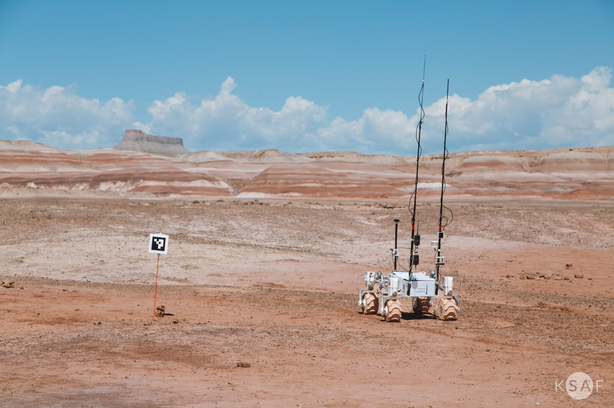
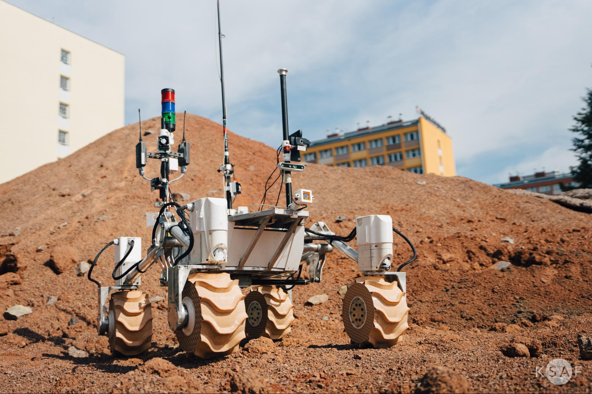

RESEARCH
Omnidirectional Autonomous Navigation With Multi-Camera RGBD Odometry
I. Urbanik, M. Gibiec
2024 15th Annual Undergraduate Research Conference on Applied Computing (URC)
24-25 April 2024, Dubai, United Arab Emirates
Winner of the Best Full Paper award

Photo: Katarzyna Sadowy, KSAF
The culmination of my work at AGH Space Systems.
Describes the process of merging RGBD data from multiple cameras into a single localization system.
Gives insight on using omnidirectional-like drives for robots.
Includes multiple practical remarks for the implementation.
DOI: 10.1109/URC62276.2024.10604488
IEEE XploreAutonomous Navigation of the Kalman Planetary Rover [PL]
S. Bednorz, I. Urbanik
II Student's Space Conference
20-21 October 2022, Wroclaw, Poland

Photo: Natalia Deyna, KSAF
My first little paper :)
Describes the general concepts of Kalman Rover's autonomous navigation.
Conference book